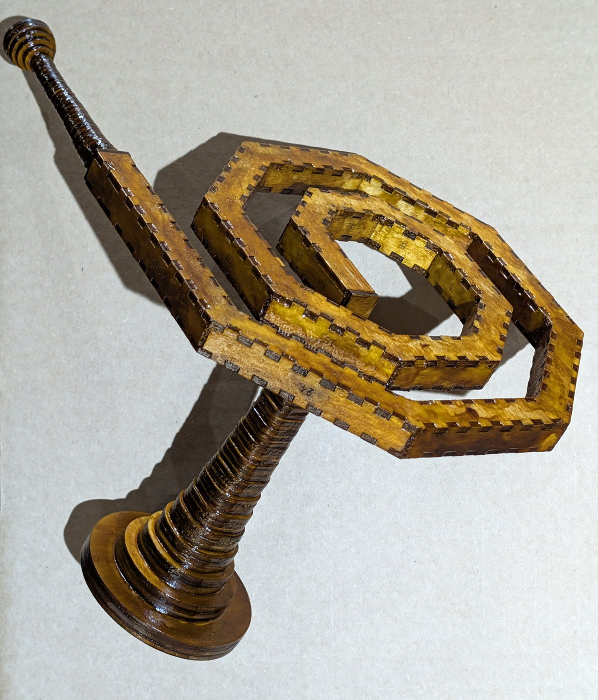

Trumpet, swept curve
Read the README · Turn the built spiral in 3D on a page of its own
A trumpet bore cut flat from 3mm birch ply, swept along a curve rather than walked through a grid of cubes. A 10mm square airway is drawn along a planar curve, so two faces of the tube are flat — the two cheeks, each one plate — and the other two are faceted, a wall panel standing in mortices at every facet. Nothing about it sits on a grid and nothing in it is an elbow, so none of these could be built in Minecraft. That is what separates them from the grid-block trumpets in trumpet-elbows-allowed, the same instrument walked through cubes.
They are versions of that same trumpet, not a different instrument. The airway is the same 10mm square, and every design here takes the same bell and the same mouthpiece, which live in trumpet-elbows-allowed: the bell and the mouthpiece.
What a swept curve buys is a smooth turn. The section grows at every mitre, and on a curve it grows far less than at a grid corner:
| curve | section at a turn | why it exists | |
|---|---|---|---|
| grid walk | 90° turns | +41.4% | fits a walk into a box |
| swept curve | any planar curve | +3.5% at 30°, +8.2% at 45° | constant section on a smooth curve |
The grid walk packs into a box; a swept curve lies flat and turns gently.
Built
The spiral bore — 1000mm in 19 facets of 45°, winding out from R34.7 to R112.9. Both sheets cut, press-fit, a bell in its square port and a mouthpiece on its straight tail, finished in shellac and blown; its note is not yet reported. Turn it in 3D, with the bell in its port and the mouthpiece on its tail.

Designed, not yet cut
Each has its cut files and a viewer you can turn, drawn with the mouthpiece on one end and the bell on the other, so each is a whole trumpet once those are fitted.
| design | centreline | facets | what it is |
|---|---|---|---|
| double spiral | 1506.4mm | 30° | two interleaved arms winding in to meet at the centre, a straight lead leaving the rim at the top and another at the bottom |
| short double spiral | 1000.0mm | 30° | the same with five facets off each arm, and the only design ported at both ends |
| double volute | 1179.9mm | 45° | two interleaved arms of straight-sided semicircles winding in to meet at the eye |
| three-lobe serpentine | 1000.0mm | 30° | three rounded lobes in a row, a straight lead at each end pointing opposite ways |
| serpentine | 1000.0mm | 30° | three lobes of R72 |
| ess | 836.5mm | 45° | a trough and a crest of R55, doubling back into a long narrow loop, level at both ends |
One more is drawn and not cut: the single volute, six semicircles of stepping radius from volute/volute.py. Its inner end is enclosed, with nowhere to go, and its two openings come out 135° apart, so it has no cut files.
Closed rings
A ring has no ends, so it cannot take a mouthpiece and a bell the way the designs above do. These four are drawn because the mitring a ring needs is the mitring every other shape needs. The ring and the scallop take two ports on named facets, one through each cheek, which gives a mouthpiece and a bell two air paths between them. None has been cut.
| design | centreline | facets | what it is |
|---|---|---|---|
| ring · square-ported | 800mm | 13 of 27.7° | a 13-facet ring, ported on facets 0 and 6 |
| scallop | 800.0mm | 36° | five lobes, ported on facets 1 and 14 |
| racetrack | 1600.0mm | 45° | four lobes and two caps; no port clears a neighbouring mortice, so it is unported |
| oval | 314.4mm | 30° | a small closed loop, unported |
The double spiral
The double spiral is one of two shapes here whose two arms interleave — the double volute is the other, the same skeleton drawn on semicircles. Two arms half a turn apart about one centre, crossed in the middle by a straight: 1506.4mm of bore on a cheek plate 232 × 241mm. Arm B is arm A turned through 180°, so the gap between neighbouring passes is half the radial pitch by construction rather than by search — choose the pitch and you have chosen the gap. The cheek is a 20mm band, so 46mm a turn is the first pitch that clears it, and the two passes come out 23.00mm apart.
Its centreline is the one that does not step its arc radius facet by facet. Vertices sit on a smooth spiral r = R0 + b·θ sampled every facet instead, which the note beside --shape=spiral warns is the construction offset() cannot follow. That note is about offsetting a smooth curve and faceting the result separately; offsetting the faceted centreline is exact whatever placed its vertices, and the airway measures 4.4e-14mm from the bore here. The stepping construction could not be used anyway — its polar radius advances 7mm across one half turn and 32mm across another, and two arms interleaved at those radii collide.
The open middle is forced, not styled. A straight through the centre is tangent to the crossover arc only when the arm's inner end lies outside twice that arc's radius, so R62 against R30 is a floor; tighten it and the inner panels stop being long enough to hold a 6mm tooth, and the generator refuses rather than drawing one. Both openings still come out on the rim facing opposite ways, which is what a total turning of 0° buys.
Two arms wound into each other is the arrangement here that could have run the bore back into itself, and the check that would have caught it already existed: the cheek outline does not cross itself. It passes, at 85 edges and no crossings.
The short double spiral is that same spiral with five facets taken off each arm, 14 down to 9 — a trim and not a redraw: the pitch, the R62 start and the R30 crossover are the shipped design's, and the shape stays point-symmetric because a facet comes off each end at once. 1000.0mm on a 186 × 236mm cheek, against 1506.4mm on 232 × 241mm.
The facet is what quantises it and the lead is what lands it. Nine facets an arm give 956.0mm and ten give 1058.2, so the trim alone cannot reach 1000 — whole facets are the only thing that comes off, and they come off about 100mm at a time. The last 44mm is bought by lengthening both leads from 20mm to 42: the lead is a straight run tangent to the arm, so it adds length without moving a single facet of the coil. That it costs 42mm of straight tail at each rim is the price, and the reason the figure is quoted as a choice and not as what the generator happened to give.
It is also the only open design in this repository ported at both ends — the ported rings take their two ports on named facets, having no ends. One square port is bought by folding the mouth lead into the facet it already lies on, and the far end wants the same thing: --port-both folds the tail lead too, or the second port lands on that lead's single tooth and the generator refuses — the refusal being correct, and the reason the flag does the fold rather than overruling the check. Two ports mean two open ends, so --cap draws two caps. The mortices do not move: against the unmerged build, four lead panels drop and not one surviving tooth shifts.
It ships two port arrangements, and the difference is which joints have been made before. The one-port set is the spiral's: the port takes the bell, its stub is capped, and the far rim end stays open so the mouthpiece seats on the tube end, where four walls grip the full 16mm. That is the arrangement standing in ply on the spiral bore's page, where the photograph shows the bell on its throat in the port and the mouthpiece out on the tail.
The two-port set below is the one where the mouthpiece must seat in a port — 10 × 10mm through a single 3mm cheek — which a bell has done and a mouthpiece has not. A bell sits where it is put; a mouthpiece takes lip pressure.
In the two-port set the ports are split between the two cheeks, which is what makes it an instrument rather than a coil with holes in it. A port through both cheeks is a socket right through, and the side you are not using is an open hole to plug; two of those are waste. --port-per-cheek puts one port on each sheet instead — cheek-a carries the mouth, cheek-b the far end, each cut once — so the mouthpiece enters one face and the bell leaves the other, at points 222.5mm apart and exactly opposite through the coil's centre. The openings are no longer in the plane at all, so the total-turning-zero argument that sets the two rim ends on opposite headings has stopped describing how it is played: those ends are the capped ones. rotatable() reports that the two sheets are the same part half a turn apart, to 9e-16mm — so one sheet cut twice with one turned round would also do, at the price of engraved numbers upside down on the turned one.
The generator
ribbon_bore.py draws every sheet here, and ribbon_view.py every viewer page; the viewer reads its design from the generator rather than keeping a copy. CLAUDE.md holds the rules for changing either, and NOTES.md the reasoning and measurements behind them.
python3 ribbon_bore.py --shape=spiral --port --port-square --cap --narrow --no-writeThat runs every check on the built spiral's design and writes nothing. Every shipped sheet is --narrow; the spiral bore's page gives the command that drew the sheets that were cut. ribbon_bore.py also lends its path writer to square-flute and its panels and sheets to lyre-harp, each of which expects this repository cloned beside it.
Files
built/ |
the spiral bore, which exists in wood: its cut files, previews, photographs, viewer, and the framed build of the viewer this page opens with |
ribbon-spiral/ |
the spiral bore's page |
double-spiral/ · volute/ · three-lobe-serpentine-with-collinear-ends/ · serpentine/ · ess/ |
the open designs, a folder each: cut files and a viewer |
torus/ · scallop/ · racetrack/ · oval/ |
the closed rings, the same way |
previews/ |
display renderings of the designs' cut files — not cut files |
ribbon_bore.py · ribbon_view.py |
the generator and the viewer |
volute/volute.py · volute/volute.json |
the compass construction behind the single volute |
CLAUDE.md · NOTES.md |
the rules, and the reasoning behind them |
README.md · index.html |
this writeup and its published page; the markdown is the source |
Until 2026-10-14 all of this was parts/bore/concept/swept-curve/ and part of built/ in trumpet-elbows-allowed, and its history came with it.
More, and licence
Built for LaserMadeMusic, where the cutting and the playing are shown.
The rest of the build files — every instrument, each with its own writeup.
Released under CC0 1.0. Boxes.py is Florian Festi's and is GPL-3.0-or-later; none of it is in this repository.